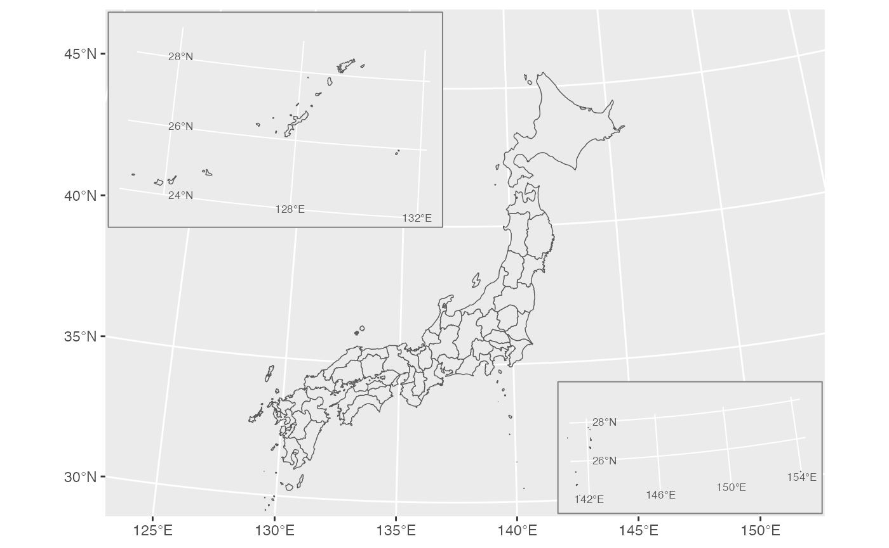
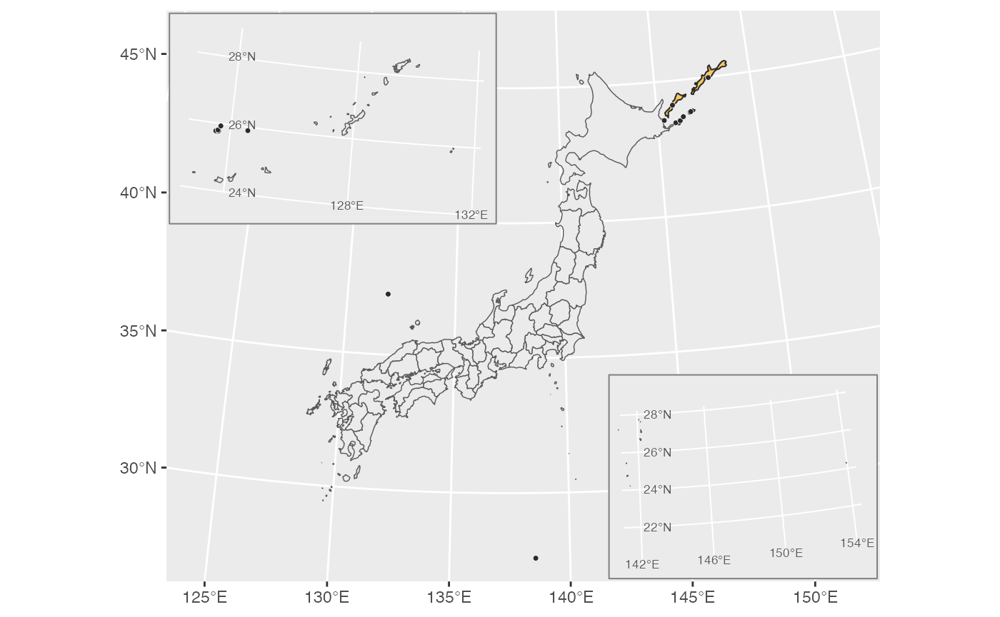

jpmap separates convenience from data provenance. The
package includes small boundary files so new users can draw maps
immediately, and it also provides helpers for building larger local
boundary files from official public sources.
Bundled Boundary Data
The installed package includes:
- all-Japan prefecture example boundaries used by default for prefecture maps;
- official MLIT N03 municipal boundaries for Okinawa Prefecture as of January 1, 2024;
- opt-in disputed-territory shapes used only when
territorial_disputesis requested.
You can see the available bundled and local GeoPackage files with:
library(jpmap)
available_jpmap_data()[c("year", "pref_code", "prefecture")]
#> year pref_code prefecture
#> 1 2021 <NA> <NA>
#> 2 2024 47 OkinawaThe website intentionally does not print the user-specific data
directory. Run jpmap_data_dir(create = FALSE) locally when
you need to inspect where your own generated boundary files are
saved.
Official Municipal Boundaries
Municipality maps are based on Japan’s MLIT National Land Numerical Information N03 administrative area data:
- MLIT N03 2024 page: https://nlftp.mlit.go.jp/ksj/gml/datalist/KsjTmplt-N03-2024.html
- national 2024 archive: https://nlftp.mlit.go.jp/ksj/gml/data/N03/N03-2024/N03-20240101_GML.zip
- Okinawa 2024 archive: https://nlftp.mlit.go.jp/ksj/gml/data/N03/N03-2024/N03-20240101_47_GML.zip
Build one prefecture when you only need one prefecture:
jpmap_build_data(year = 2024, prefecture = "Ehime")Build the national file only when you need all municipalities:
jpmap_build_data(year = 2024)jpmap_build_data() converts the source archive to a
GeoPackage with two layers, prefectures and
municipalities.
Disputed-Territory Shapes
Disputed-territory shapes are excluded by default:
plot_jpmap("prefecture")
Add them explicitly when they are relevant to your map:
plot_jpmap("prefecture", territorial_disputes = TRUE)
You can also include selected areas:
plot_jpmap("prefecture", territorial_disputes = "senkaku")
plot_jpmap("prefecture", territorial_disputes = c("senkaku", "takeshima"))The disputed-territory layer is a cartographic display layer. It is not a legal statement about sovereignty. The layer exists so users can make an explicit and documented display choice rather than relying on silently included or silently omitted small islands and reefs.
Reproducibility
For a reproducible project, record:
- the
jpmappackage version; - the boundary data year;
- whether boundaries came from bundled files or locally built files;
- whether
territorial_disputeswasFALSE,TRUE, or a selected character vector; - any simplification tolerance used when building local data.
For example:
sessionInfo()
available_jpmap_data()[c("year", "pref_code", "prefecture")]